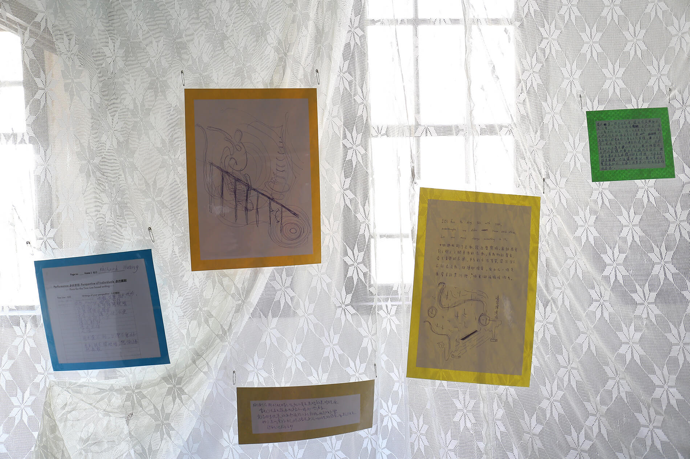
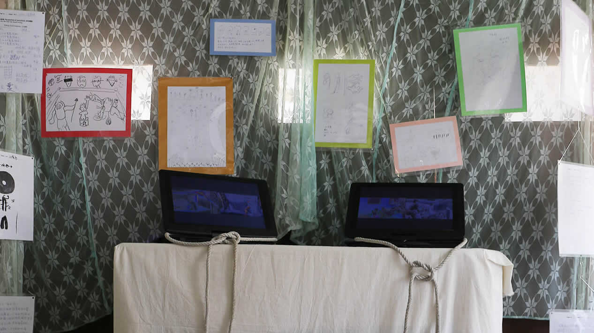
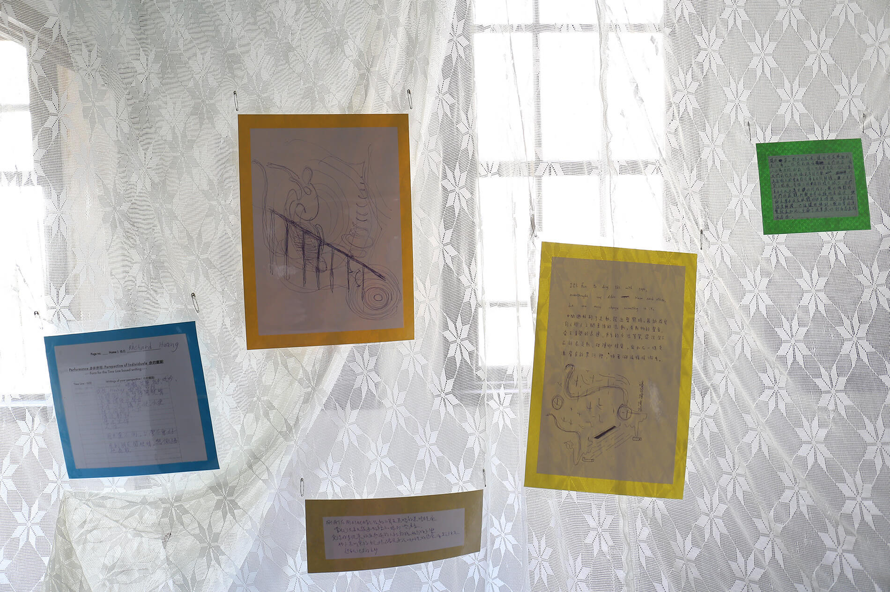
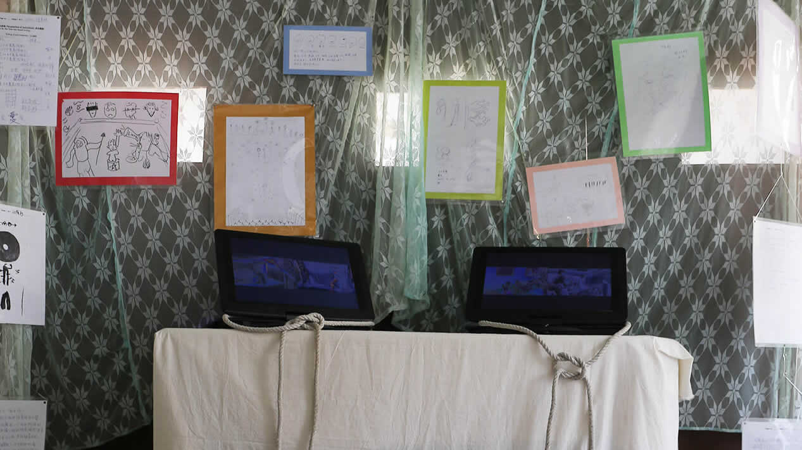
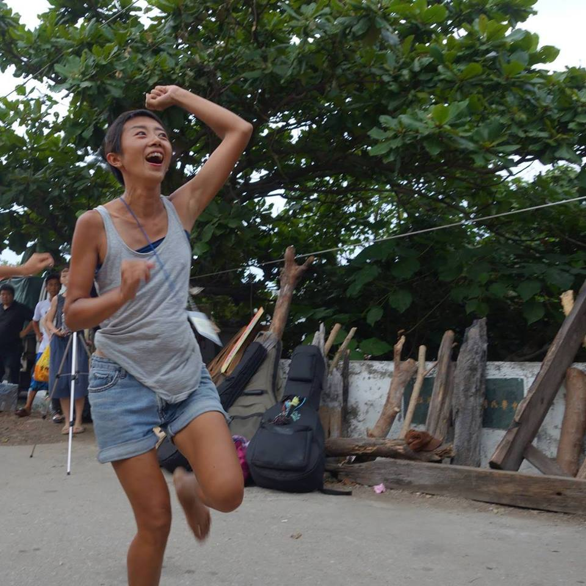

視角位移畫室工作坊
策展人 │蔡繡如 Showzoo Tsai
藝術家 │高郁宜 Yui Kao
協力演出 │花崎草 Kaya Hanasaki
活動時間│9/4（日）19:30～21:00
◆入場費用一人300，如有轉換角色，活動結束時將會退回費用，
並由全部模特兒平分所有入場費用
◆全程禁止攝影拍照
◆未滿十八歲者不得入場
活動內容│動態速寫結合即興肢體表演，模特兒與畫者之間可交換角色的體驗型畫室工作坊。請自備創作所需畫具。
主辦單位│能盛興工廠國際藝術村
指導單位│文化部
《視角位移畫室工作坊》 經由當代觀看視角的位移談身體政治
你（妳）可以只是一個畫者
你（妳）可以只是一個觀者
你（妳）也可以移動你（妳）的角色
轉換為被注視的那方 體驗作為模特兒的心情與感受
藝術訓練為什麼需要畫裸體？利用合法性行為（畫室、工作坊）探討隱藏性的色情觀（有權利等差的觀看赤裸），將收費制度透明化，指出單向度觀看權利的階級價格。同時提供只要角色易位，即可進行平等價值交換：畫室成員亦可成為模特兒，作為交換畫其他的模特兒。
這個資本主義剝削勞動者的時代，肉身的勞動越來越廉價。這一代年輕人希冀自己的勞動有更好的報償，卻在正常的工作管道中經驗頓挫，更高的工時更低的薪資，讓人難以從資本機器中解脫出，有時間與精力進行創造式的內容。
時代的遷移，越來越多的年輕人沒有太多觀念上的掙扎，輕易的投身入人體模特兒的行列。從裸體是藝術到為藝術犧牲的視角，再過渡到將裸體做為身體解放的工具。工作坊中將探討慾望透明化過程反映的主體空乏，與模特兒如何從無意識被注視物轉換到主體意識形成的過程。
藝術家與能盛興工廠團隊互動，自組畫室社團，藉由藝術與身體勞動結合，被觀看主體有意識的利用時代觀念差異，探討消費肉體注視權的高額酬勞與勞動身體在不等價的交換中，解放高時勞動的身體，釋放出更多的時間作為創造理想的資本。
 

表演者 Artist

高郁宜1980年生於台南市，跨域展演、人體模特兒 2009至今，現為能盛興工廠負責人之一。
近期劇場, 跨域展演包括「I am your past, You are my future」（中山創意基地，台北, 2015年）, 「安靜跨越邊界 一項跨越文化計畫」（蕭壠文化園區, 台南, 2014年）, 「我懂 懷素可能不會醉」（蕭壠文化園區， 台南，2014年）， 「自由花」（劇場藝術節, 法國馬賽，2011年） , 「深光」（南海藝廊, 台北, 2011年）「純淨的夜」（孤嶺街小劇場, 台北, 2011年）